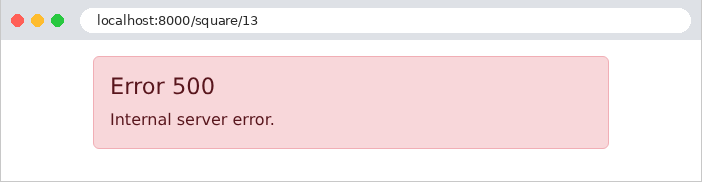

7. 请求的生命周期
从请求到达到其响应发出之间，[Symfony] 内核（[HttpKernel] 类）要执行若干步骤，并且在每一步都会发布一个事件，应用程序可以通过监听器对其作出响应。我们已经遇到过其中的几个：[kernel.request] 和 [kernel.response] 的监听器（示例 03、16、22）、[kernel.exception] 的监听器（示例 08 和 12），以及参数解析器（示例 12）。本章把它们汇集在一个示例中，该示例在每一步都在控制台中显示一条消息，以便你观察它们的顺序：
- 1 和 2。[kernel.request]：请求刚刚到达。此事件的所有监听器都会按优先级从高到低的顺序被调用。其中之一是 路由监听器 （属于 [Symfony] ，即 [RouterListener] 监听器，优先级为 32）：它查找与 URL 和方法匹配的路由，并把路由名称和参数存入请求属性；如果没有匹配的路由，它会抛出 [NotFoundHttpException] （404）异常。优先级高于 32 的监听器（1）在路由之前运行，不知道路由；优先级较低的监听器（2）则知道路由。[kernel.request] 监听器还可以自己提供响应（[$event->setResponse(...)]）：此时不会调用动作；
- 3。[kernel.controller]：动作已被选定，但尚未被调用。监听器可以检查动作（例如它的 [PHP] 属性）或替换它；
- 4。参数解析器计算动作的参数（示例 12），然后发布事件 [kernel.controller_arguments] ；
- 5。动作及其生成的视图。（如果动作不返回 [Response] 对象，则会有一个额外的事件 [kernel.view]，允许监听器根据动作返回的内容构造响应。）；
- 6 和 7。[kernel.response]：响应已就绪。每个监听器都可以按优先级从高到低的顺序修改它（添加请求头、Cookie）；
- 8。[kernel.terminate]，在响应发送给浏览器之后发布（这就是 [$kernel->terminate(...)] 调用，位于 [public/index.php] 文件中，示例 01）。监听器此时已无法再更改响应：它们用于可以等待的任务（写日志、发送电子邮件等），而不会让用户等待；
- x。[kernel.exception]：在任何阶段（由监听器、解析器、动作或视图）抛出的异常都会中断处理；它由该事件的监听器来处理。第一个提供响应的监听器会终止查找。随后，该响应像普通响应一样经过 [kernel.response]。如果应用程序中没有监听器提供响应，[Symfony] 就会生成错误页面：调试模式下内容详细，否则内容极简。
这相当于 [Java] 中的过滤器和 [Spring MVC] 中的拦截器、[ASP.NET Core MVC] 中的动作过滤器、[before_request] / [after_request] 和 [Flask] 中的函数，以及 [Laravel] 的中间件。它们的区别在于结构：中间件组件包裹其余的处理过程（它调用 [$next]，因此在同一段代码中既能看到之前的请求，也能看到之后的响应），而监听器则对一个事件作出反应；要在动作之前和之后都采取行动，就必须监听两个事件。另一方面，监听器可以在特定阶段介入（路由之后、动作被选定之后等），并且监听器的顺序由一个数字——优先级——决定。
7.1. 示例 24：请求处理的各个阶段
| 24-lifecycle/
├── src/
│ ├── Controller/
│ │ └── CalcController.php
│ ├── EventListener/
│ │ ├── Block.php
│ │ ├── Timing.php
│ │ ├── Timed.php
│ │ ├── Logger.php
│ │ └── ErrorPage.php
│ └── Binding/
│ └── IntegerResolver.php
├── templates/
│ ├── calc/
│ │ └── result.html.twig
│ ├── error.html.twig
│ └── layout.html.twig
└── ...
|
该应用程序只有一个动作，用于计算整数的平方：[/square/7]。根据 URL 的不同，它会成功，或以各种方式失败。消息由 [error_log] 函数（来自 [PHP]）写入服务器控制台，开发服务器（[php -S]）会显示这些消息。
7.1.1. 最先和最后执行的部分：src/EventListener/Logger.php
| <?php
// src/EventListener/Logger.php：一个监听两个事件的监听器。它在应用程序的其余部分之前
// （甚至在路由之前）看到每个请求经过，并在其余所有部分之后
// 看到响应
namespace App\EventListener;
use Symfony\Component\EventDispatcher\Attribute\AsEventListener;
use Symfony\Component\HttpKernel\Event\RequestEvent;
use Symfony\Component\HttpKernel\Event\ResponseEvent;
use Symfony\Component\HttpKernel\KernelEvents;
class Logger
{
// 优先级 100：在 Symfony 的路由（优先级 32）之前
#[AsEventListener(event: KernelEvents::REQUEST, priority: 100)]
public function before(RequestEvent $event): void
{
$request = $event->getRequest();
// error_log：开发服务器控制台中的一条消息
error_log('--- '.$request->getMethod().' '.$request->getRequestUri());
error_log('1. Logger, kernel.request (before the routing)');
}
// 优先级 -100：在 kernel.response 的其他监听器之后
#[AsEventListener(event: KernelEvents::RESPONSE, priority: -100)]
public function after(ResponseEvent $event): void
{
error_log('7. Logger, kernel.response (code '.$event->getResponse()->getStatusCode().')');
}
}
|
单个类可以监听多个事件：此时 [#[AsEventListener]] 属性应用于每个相关的方法。
- 第 16–23 行：消息 #1，带有请求（[getRequestUri()]：路径和参数）。优先级 100 使该监听器位于路由之前：此时 [Symfony] 中还什么都没有发生；
- 第 26–30 行：消息 #7，在其他一切都完成之后。优先级 -100 使该监听器位于应用程序和 [Symfony] 的监听器之后（它们大多数的优先级在 -10 到 10 之间）。[getStatusCode()] 是响应码。
这样的监听器不知道所选的路由，因为路由尚未进行。它用于适用于所有请求的处理：日志记录、代理处理（案例研究在涉及客户端 IP 地址时会提到这一点）……
7.1.2. 路由之后：src/EventListener/Block.php
| <?php
// src/EventListener/Block.php：kernel.request 的一个监听器，在路由之后
// 执行：它知道所选的路由
namespace App\EventListener;
use Symfony\Component\EventDispatcher\Attribute\AsEventListener;
use Symfony\Component\HttpKernel\Event\RequestEvent;
use Symfony\Component\HttpKernel\Exception\AccessDeniedHttpException;
use Symfony\Component\HttpKernel\KernelEvents;
// 优先级 0（默认）：在路由（优先级 32）之后
#[AsEventListener(event: KernelEvents::REQUEST)]
class Block
{
public function __invoke(RequestEvent $event): void
{
$request = $event->getRequest();
// 请求的 _route 属性：路由系统所选路由的名称
error_log('2. Block, kernel.request (route: '.$request->attributes->get('_route').')');
if ($request->query->has('block')) {
// 一个异常：其余部分（Timing、操作）不会执行
throw new AccessDeniedHttpException('access blocked');
}
}
}
|
- 第 13 行：默认优先级 0：监听器在路由之后被调用；
- 第 20 行：消息 #2。路由已把所选路由的名称存入请求的 [_route] 属性（其参数则存入同名属性，示例 12）；
- 第 21–24 行：URL 的 [?block] 参数（[has] 检查它是否存在）会导致 403 错误（Forbidden，拒绝访问）：[AccessDeniedHttpException] 异常终止处理。
7.1.3. 动作之前：src/EventListener/Timed.php 和 Timing.php
我们只想为某些动作——那些需要计时的动作——计时。我们只需用自定义的属性（[PHP]）来标记它们：
| <?php
// src/EventListener/Timed.php：我们自己发明的 PHP 属性，放置在
// 我们想要测量其耗时的操作上（见 Timing 监听器）
namespace App\EventListener;
use Attribute;
// #[Attribute]：该类是一个属性；TARGET_METHOD：它放置在方法上
#[Attribute(Attribute::TARGET_METHOD)]
class Timed
{
}
|
属性是一个普通的类，其本身用属性 [#[Attribute]] 标记；[Attribute::TARGET_METHOD] 表示它应用于方法。此属性不携带任何信息：重要的只是它的存在。
| <?php
// src/EventListener/Timing.php：一个监听三个事件的监听器，仅对
// 标有 #[Timed] 属性的操作起作用：在操作之前、操作之后，
// 以及在响应发送之后最后一次（kernel.terminate）
namespace App\EventListener;
use Symfony\Component\EventDispatcher\Attribute\AsEventListener;
use Symfony\Component\HttpKernel\Event\ControllerEvent;
use Symfony\Component\HttpKernel\Event\ResponseEvent;
use Symfony\Component\HttpKernel\Event\TerminateEvent;
use Symfony\Component\HttpKernel\KernelEvents;
class Timing
{
// kernel.controller：操作已被选定，但尚未被调用
#[AsEventListener(event: KernelEvents::CONTROLLER)]
public function before(ControllerEvent $event): void
{
// getAttributes：操作所带的某个给定类的 PHP 属性
if ($event->getAttributes(Timed::class) === []) {
return;
}
error_log('3. Timing, kernel.controller (before the action)');
// 开始时间（hrtime：精确的时钟，以纳秒为单位），存储
// 在请求的属性中（请求作用域，见示例 12）
$event->getRequest()->attributes->set('start', hrtime(true));
}
#[AsEventListener(event: KernelEvents::RESPONSE)]
public function after(ResponseEvent $event): void
{
if ($event->getRequest()->attributes->has('start')) {
error_log('6. Timing, kernel.response (code '.$event->getResponse()->getStatusCode().')');
}
}
// kernel.terminate：在最后，响应发送给浏览器之后；
// 响应不能再被更改
#[AsEventListener(event: KernelEvents::TERMINATE)]
public function end(TerminateEvent $event): void
{
$start = $event->getRequest()->attributes->get('start');
// 如果没有执行到操作，测量就还没有开始
if ($start !== null) {
$ms = round((hrtime(true) - $start) / 1e6);
error_log("8. Timing, kernel.terminate (end, $ms ms)");
}
}
}
|
- 第 17–28 行：[kernel.controller] 事件。事件的 [getAttributes] 方法返回动作（及其所在类）所携带的给定类的 [PHP] 属性：列表为空表示该动作没有被标记，监听器什么也不做。否则，输出消息 #3，并把开始时间存入请求属性（示例 12）。[hrtime(true)] 是一个精确的时钟，单位为纳秒，专为测量时长而设计；
- 第 30–36 行：消息 #6，与 [kernel.response] 有关，如果测量已经开始，则带有响应码。默认优先级 0 使该监听器位于 [Logger] （-100）的监听器之前；
- 第 40–49 行：[kernel.terminate] 事件，在响应发送之后发布：消息 #8，包含自消息 #3 以来经过的时间。第 45 行的检查验证测量是否已经开始：该事件会为所有请求发布，即使是那些没有到达动作的请求。
[Symfony] 本身就是这样实现它的一些属性的：[#[IsGranted]]（我们将在下一章讨论）由 [kernel.controller_arguments] 的一个监听器读取，如果用户没有所要求的权限，该监听器会拒绝访问该动作。
7.1.4. 动作的参数：src/Binding/IntegerResolver.php 和控制器
| <?php
// src/Binding/IntegerResolver.php：一个参数解析器（见示例 12）：
// 将路由参数转换为整数，如果不是整数则转换为 null
// （此时由操作来决定）
namespace App\Binding;
use Symfony\Component\HttpFoundation\Request;
use Symfony\Component\HttpKernel\Controller\ValueResolverInterface;
use Symfony\Component\HttpKernel\ControllerMetadata\ArgumentMetadata;
class IntegerResolver implements ValueResolverInterface
{
public function resolve(Request $request, ArgumentMetadata $argument): iterable
{
$value = $request->attributes->get($argument->getName());
error_log("4. IntegerResolver, the arguments of the action (received value: \"$value\")");
$n = filter_var($value, FILTER_VALIDATE_INT);
return [$n === false ? null : $n];
}
}
|
一个参数解析器（示例 12），它输出消息 #4。它接受任何文本，并将其转换为整数，如果不是整数则转换为 [null] （[filter_var] 返回 [false]）：这与诸如 [requirements] （示例 02）之类的约束不同，后者对 [/square/abc] 会返回 404 页面；这里，由动作来决定结果。
| <?php
// src/Controller/CalcController.php：一个计时的操作
namespace App\Controller;
use App\EventListener\Timed;
use App\Binding\IntegerResolver;
use DomainException;
use Symfony\Bundle\FrameworkBundle\Controller\AbstractController;
use Symfony\Component\HttpFoundation\Response;
use Symfony\Component\HttpKernel\Attribute\ValueResolver;
use Symfony\Component\HttpKernel\Exception\BadRequestHttpException;
use Symfony\Component\Routing\Attribute\Route;
class CalcController extends AbstractController
{
// $n：{n} 路由参数，由我们的 IntegerResolver 解析器提供；
// #[Timed]：Timing 监听器测量该操作的耗时
#[Route('/square/{n}', name: 'square', methods: ['GET'])]
#[Timed]
public function square(#[ValueResolver(IntegerResolver::class)] ?int $n): Response
{
error_log("5. action square($n)");
if ($n === null) {
throw new BadRequestHttpException('not an integer'); // 400 错误：见 ErrorPage
}
if ($n === 13) {
throw new DomainException('13 brings bad luck'); // 一个“意外的”错误
}
return $this->render('calc/result.html.twig', ['n' => $n, 'square' => $n * $n]);
}
}
|
- 第 20 行：动作被标记上了我们的属性 [#[Timed]]；
- 第 21 行：参数 [$n] 由我们的解析器提供（属性 [#[ValueResolver]]，示例 12）；
- 第 24–26 行：参数不是整数：错误 400（Bad Request），由异常 [BadRequestHttpException] 引起；
- 第 27–29 行：数字 13 会导致一个“意外”错误。[DomainException] 是来自 [PHP] 标准库的异常类；
- 第 30 行：正常情况。[calc/result.html.twig] 视图只是显示结果。
7.1.5. 错误处理：src/EventListener/ErrorPage.php
| <?php
// src/EventListener/ErrorPage.php：kernel.exception 的一个监听器，用我们的错误页面
// 取代 Symfony 的错误页面
namespace App\EventListener;
use DomainException;
use Symfony\Component\EventDispatcher\Attribute\AsEventListener;
use Symfony\Component\HttpFoundation\Response;
use Symfony\Component\HttpKernel\Event\ExceptionEvent;
use Symfony\Component\HttpKernel\Exception\HttpExceptionInterface;
use Symfony\Component\HttpKernel\KernelEvents;
use Twig\Environment;
// 优先级 -10：在将异常写入日志的 Symfony 监听器（0）之后，
// 在构建其错误页面的监听器（-128）之前
#[AsEventListener(event: KernelEvents::EXCEPTION, priority: -10)]
class ErrorPage
{
// Environment：Twig 引擎本身，用于在控制器之外构建页面
public function __construct(private Environment $twig)
{
}
public function __invoke(ExceptionEvent $event): void
{
$e = $event->getThrowable();
if ($e instanceof HttpExceptionInterface) {
// HTTP 错误（403、未知页面 -> 404...）：HttpExceptionInterface
// 是所有 HTTP 异常的接口；它们携带自己的状态码
error_log("x. ErrorPage, kernel.exception (HTTP {$e->getStatusCode()})");
$code = $e->getStatusCode();
} elseif ($e instanceof DomainException) {
// 某个给定类型的“意外”异常：DomainException 及其子类
error_log("x. ErrorPage, kernel.exception (DomainException: {$e->getMessage()})");
$code = 500;
} else {
return; // 其他的：Symfony 的错误页面
}
// 事件的响应会取代该异常（后续的监听器
// 不会被调用）；然后它会像普通响应一样经过 kernel.response
$event->setResponse(new Response(
$this->twig->render('error.html.twig', ['code' => $code]), $code));
}
}
|
- 第 15–17 行：[kernel.exception] 的监听器，优先级为 -10。[Symfony] 为该事件注册了两个监听器：第一个优先级为 0，记录异常日志；第二个优先级为 -128，生成来自 [Symfony] 的错误页面。我们的监听器介于两者之间：先记录异常日志，然后由我们显示页面；
- 第 21 行：该监听器不是控制器，没有 [render] 方法（来自 [AbstractController]）：它直接接收 [Twig] 引擎（[Twig\Environment] 类），其 [render] 方法以字符串形式返回渲染后的页面；
- 第 28–32 行：所有 HTTP 错误：没有路由的 URL（404）、被拒绝的方法（405），以及异常 [AccessDeniedHttpException] （403）和 [BadRequestHttpException] （400）等都实现了 [HttpExceptionInterface] 接口，并携带它们的状态码（[getStatusCode()]）。因此，这一个测试就用我们的页面替换了所有 [Symfony] 错误页面；
- 第 33–36 行：类为 [DomainException] （或其子类；参见示例 08）的异常：一个“意外”错误，被转换为“自定义”错误页面，状态码为 500（Internal Server Error）。异常消息显示在控制台中，但不显示在页面上：它可能包含与用户无关的内部细节；
- 第 37–39 行：其他异常由 [Symfony] 处理；
- 第 42–43 行：[setResponse] 提供响应，该响应取代异常并阻止事件继续传播：后续的监听器（[Symfony] 的错误页面）不会被调用。
错误页面接收错误码并显示相应的消息：
| {% extends 'layout.html.twig' %}
{# 错误页面；其模型：错误代码 #}
{% block content %}
<div class="alert alert-danger">
<h1 class="h4">Error {{ code }}</h1>
{# 一个以代码为索引的关联数组；??：默认值 #}
<p class="mb-0">{{ {400: 'Bad request.', 403: 'Access denied.', 404: 'Page not found.'}[code] ?? 'Internal server error.' }}</p>
</div>
{% endblock %}
|
- 第 8 行：在视图中定义的关联数组（[{key: value, ...}]），从中取出索引为 [code] 的元素；当该元素不存在时，运算符 [??] 提供默认值。
还有另一种更简单的方式，无需编写监听器就能替换错误页面：名为 [templates/bundles/TwigBundle/Exception/error404.html.twig] 的视图会替换 404 错误页面，其他每个状态码也是如此（[error.html.twig] 用于所有其他状态码）。这些视图只在生产环境中使用；调试模式保留其详细页面（你可以在调试模式下通过 [/_error/404] 预览它们，前提是你已导入路由 [@FrameworkBundle/Resources/config/routing/errors.php]）。另一方面，监听器可以在所有模式下实现任何类型的处理（JSON 响应、重定向等）。
7.1.6. 执行
正常情况，[/square/7]：

服务器控制台按顺序显示这八个步骤（[php -S] 放在各行开头的日期已被删除）：
| --- GET /square/7
1. Logger, kernel.request (before the routing)
[info] Matched route "square".
2. Block, kernel.request (route: square)
3. Timing, kernel.controller (before the action)
4. IntegerResolver, the arguments of the action (received value: "7")
5. action square(7)
6. Timing, kernel.response (code 200)
7. Logger, kernel.response (code 200)
8. Timing, kernel.terminate (end, 2 ms)
127.0.0.1:51612 [200]: GET /square/7
|
行 [[info]] 来自 [Symfony] 的路由：这是它的日志 （log）。没有日志库（最常用的是 [Monolog]，由 [composer require logger] 安装）时，[Symfony] 使用一个写入控制台的极简日志。最后一行是开发服务器的日志，在请求完成后写入。被阻止的访问，[/square/7?block]：

| --- GET /square/7?block
1. Logger, kernel.request (before the routing)
[info] Matched route "square".
2. Block, kernel.request (route: square)
[error] Uncaught PHP Exception Symfony\Component\HttpKernel\Exception\AccessDeniedHttpException: "access blocked" at Block.php line 23
x. ErrorPage, kernel.exception (HTTP 403)
7. Logger, kernel.response (code 403)
|
监听器 [Block] 抛出了异常：动作没有被选定，它的参数没有被计算，它也没有被调用。该异常由 [Symfony] 记录日志，然后由我们的监听器转换为响应；该响应经过了 [kernel.response]。事件 [kernel.terminate] 已发布，但 [Timing] 没有显示任何内容，因为测量尚未开始。不是整数的参数，[/square/abc]：

| --- GET /square/abc
1. Logger, kernel.request (before the routing)
[info] Matched route "square".
2. Block, kernel.request (route: square)
3. Timing, kernel.controller (before the action)
4. IntegerResolver, the arguments of the action (received value: "abc")
5. action square()
[error] Uncaught PHP Exception Symfony\Component\HttpKernel\Exception\BadRequestHttpException: "not an integer" at CalcController.php line 25
x. ErrorPage, kernel.exception (HTTP 400)
6. Timing, kernel.response (code 400)
7. Logger, kernel.response (code 400)
8. Timing, kernel.terminate (end, 1 ms)
|
这一次，动作以 [null] 被调用（它被呈现为空字符串：[square()]），并且正是这个动作引发了错误 400。“意外”错误，[/square/13]：

| --- GET /square/13
1. Logger, kernel.request (before the routing)
[info] Matched route "square".
2. Block, kernel.request (route: square)
3. Timing, kernel.controller (before the action)
4. IntegerResolver, the arguments of the action (received value: "13")
5. action square(13)
[critical] Uncaught PHP Exception DomainException: "13 brings bad luck" at CalcController.php line 28
x. ErrorPage, kernel.exception (DomainException: 13 brings bad luck)
6. Timing, kernel.response (code 500)
7. Logger, kernel.response (code 500)
8. Timing, kernel.terminate (end, 1 ms)
|
异常由我们的监听器处理：用户看到的是“自定义”错误页面，而不是详细页面，尽管调试模式是开启的。它仍然被记录了日志，级别为 [critical] （HTTP 错误只是 [error]）：与 [Laravel] 一样，[Symfony] 区分在日志中记录 异常与它所生成的响应 。最后，一个不对应任何路由的 URL，[/unknown]：
| --- GET /unknown
1. Logger, kernel.request (before the routing)
[error] Uncaught PHP Exception Symfony\Component\HttpKernel\Exception\NotFoundHttpException: "No route found for "GET http://localhost:8000/unknown"" at RouterListener.php line 156
x. ErrorPage, kernel.exception (HTTP 404)
7. Logger, kernel.response (code 404)
|
路由失败：其后没有监听器，也没有动作。404 页面是我们自己的：
| curl http://localhost:8000/unknown
|
| ...
<div class="alert alert-danger">
<h1 class="h4">Error 404</h1>
<p class="mb-0">Page not found.</p>
</div>
...
|
让我们聚焦要点。内核事件监听器是放置许多动作共有的检查的合适位置（用户是否已登录？他们是否有权访问此动作？）：它们构成了 [Symfony] 安全组件的基础，下一章将把它用于身份验证。[kernel.exception] 的事件监听器和错误视图确保用户无论发生什么错误都不会看到技术性页面：案例研究利用了这一点。